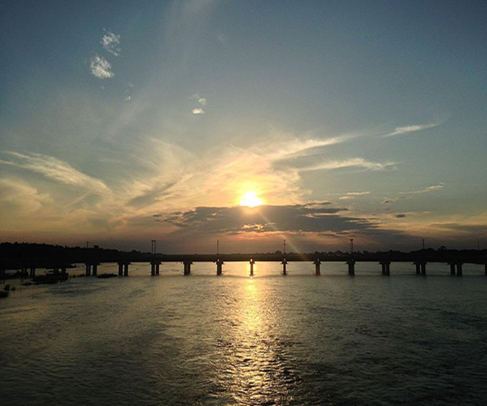
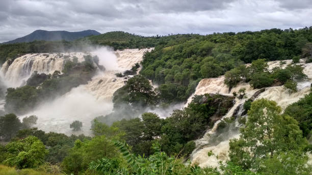

3.Kaveri River
The Kaveri (also known as Cauvery, the anglicized name) or Kaviri (in ancient Tamilakam) is one of the major Indian rivers flowing through the states of Karnataka and Tamil Nadu. The Kaveri river rises at Talakaveri in the Brahmagiri range in the Western Ghats, Kodagu district of the state of Karnataka, at an elevation of 1,341 m above mean sea level and flows for about 800 km before its outfall into the Bay of Bengal. It reaches the sea in Poompuhar in Mayiladuthurai district. It is the third largest river – after Godavari and Krishna – in southern India, and the largest in the State of Tamil Nadu
The sharing of waters of the Kaveri River has been the source of a serious conflict between the two Indian states of Tamil Nadu and Karnataka. The genesis of this conflict rests in two agreements in 1892 and 1924 between the Madras Presidency and Kingdom of Mysore. The 802 kilometres (498 mi) Kaveri river has 44,000 km2 basin area in Tamil Nadu and 32,000 km2 basin area in Karnataka. The inflow from Karnataka is 425 TMCft whereas that from Tamil Nadu is 252 TMCft

The Kaveri is a sacred river to the people of South India and is worshipped as the Goddess Kaveriamma. It is considered to be among the seven holy rivers of India. It is extensively used for agriculture in both of the afore mentioned states.

Kaveri river originates from Talakaveri in the Brahmagiri range of the Western Ghats in the
Kodagu
district of Karnataka. The major tributaries of the Kaveri river are Amravati, Hemavati,
Kabini, and Bhavani